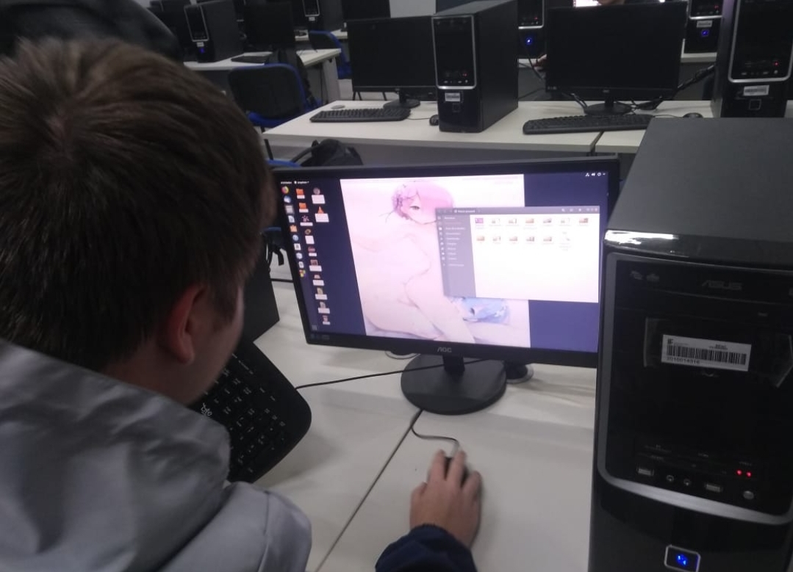

O TEMPLO DE DEUSVID
Bem-vindo ao templo de Deusvid
Aqui estao agrupadas todas as informacoes relativas a religiao
INFORMACOES
Quem e Deusvid
Deusvid e uma entidade divina que finge ser um estudante normal no IFC (Instituto Federal Catarinense) campus Brusque utilizando o nome "Deivid Leal".A religiao que o cultua e chamada de Deividcismo, e as pessoas Deividistas (proibido perguntar o motivo da falta do c)
CURIOSIDADES
O verdadeiro nome de Deusvid
Nao se sabe seu nome verdadeiro. Em todas suas aparicoes, a entidade e referida como "Deivid". Um dos textos antigos menciona alguem ter insistido para Deusvid contar seu verdadeiro nome: conta-se que quando as ondas sonoras reverberaram nas orelhas de tal pessoa, instantaneamente caiu no chao como uma tabua
Outras curiosidades
Deusvid fez muitas coisas ao longo de sua existencia. Compilamos na tabela abaixo alguns dos feitos de Deusvid na Terra registrados
| 4000 a.C | Visitou a Mesopotamia e ensinou-os a escrita |
| 588 a.C | Visitou a India e trouxe ensinamentos a Siddharta Gautama, originando o Budismo |
| 531 a.C | Criou o Linux (infelizmente ainda nao existiam computadores para roda-lo na epoca, apesar de que Deusvid poderia fazer um a qualquer momento se sentisse vontade) |
| 30 a.C | Criou um animal chamado "Ornitorrinco" e jogou ele em uma ilha para ver a reacao dos nativos ao encontrar o animal |
| 0 | Foi um dos 12 apostolos de Jesus |
| 393 d.C | Colocou pinguins para povoar a Antartida |
| 1404 d.C | Fez um manuscrito em uma lingua ficticia e jogou em um lugar aleatorio do planeta para ver suas criacoes tentando desvendar aquilo 600 anos depois |
| 1470 d.C | Removeu a America do planeta por cerca de 20 anos para deixar muita gente confusa quando tentarem ir ate as Indias e acabarem chegando em outro lugar |
| 1905 d.C | Escreveu sobre algumas mecanicas do funcionamento do universo e fez um sorteio para decidir quem receberia o papel. O vencedor foi ninguem menos que Albert Einstein |
| 1917 d.C | Criou o primeiro anime |
| 1946 d.C | Criou o primeiro computador. No entanto, a tecnologia humana nao era avancada o suficiente para conseguir mante-lo ligado, por causa disso, teve que reduzir 99.99999999999999999999999999999999999999999999999999999999999999999999999999999999999999999999999999999999999999999999999999999999999999999999999999999999999999999999999999997% de sua capacidade |
| 1970 d.C | Foi em alguma padaria aleatoria para ver como andava a culinaria de suas criacoes, encontrou Luiz Inacio Lula da Silva, que se tornaria presidente do Brasil em 2003, e pediu 20 cruzeiros emprestados para pagar o saco de pao |
| 1997 d.C | Escreveu Harry Potter. Estreou como o personagem principal no filme Titanic |
| 2004 d.C | Acidentalmente (propositalmente) entrou como ser humano mais rapido do mundo para o Guinness World Records ao correr para experimentar a sopa de marreco do Caca e Tiro, restaurante em Brusque |
| 2009 d.C | Criou o famoso jogo Minecraft |
| 2012 d.C | Adiou o fim do mundo por mais alguns anos |
| 2013 d.C | Participou de uma batalha de rap contra Barack Obama, fazendo-o comecar a considerar a desistencia da carreira |
| 2019 d.C | Entrou para o IFC com o objetivo de tentar avisar suas criacoes sobre o fim iminente do universo |
| 2020 d.C | Criou a vacina para o Coronavirus |
Vale lembrar que Deusvid provavelmente fez muitas outras coisas. Estes sao apenas os que existem registros
IMAGENS
Aqui estao algumas imagens da entidade. Como podemos ver, Deusvid possui uma aparencia externa galanteadora com uma altura cativante
